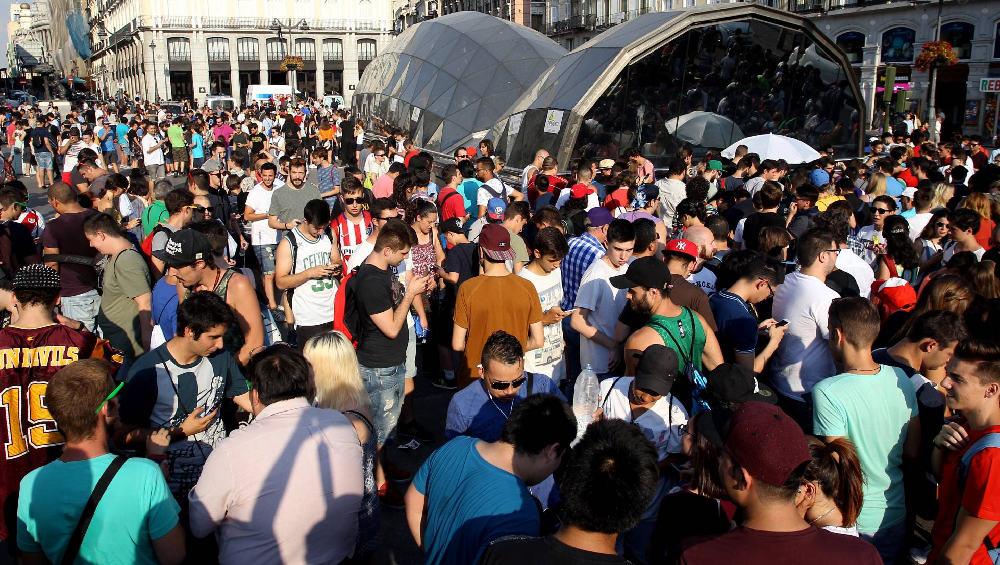
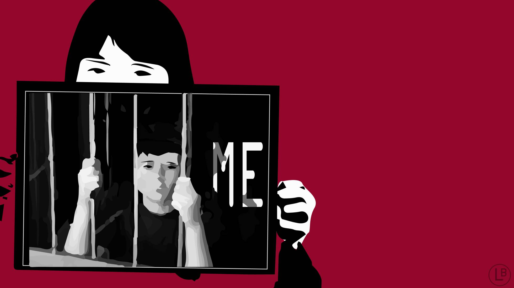

Aumenta el total de abstemios, pero en España se mantiene estable el consumo entre menores
Bruno Martín
3 NOV 2018 - 02:27 CST
El consumo de alcohol en Europa está en descenso. No solo beben menos los adolescentes ahora que en la última década, sino que cada vez son más los que no toman ni una gota. Así lo afirma el último estudio de la Organización Mundial de la Salud (OMS) sobre comportamientos adolescentes asociados al alcohol, publicado el mes pasado. Los cambios son más notables en países del norte de Europa, mientras que los países de centro-este y de la costa mediterránea encabezan el consumo juvenil. En España los datos son escasos y no dibujan una tendencia clara, pero apuntan en todo caso a un aumento nulo o muy leve de jóvenes abstemios.
El informe de la OMS, que recoge datos generales sobre el consumo adolescente y juvenil en países europeos desde 2002 hasta 2014, no pone cifras concretas al número de abstemios pero sí afirma que “muchos países han visto un descenso reciente en el consumo de alcohol en paralelo a un aumento en el número de adolescentes que se abstienen de tomarlo”. Esta tendencia no se asocia con un aumento en el consumo de otras drogas psicoactivas, como el cannabis. Según el documento, el cambio en Europa se puede atribuir a varios factores, entre los que se incluyen las restricciones a la venta del licor y una mayor comprensión entre los jóvenes de las consecuencias de su consumo.

Papá, no soy tu niña
Los adolescentes transexuales tailandeses se sienten desamparados ante la falta de información y aceptación
Ana Salvá
Barcelona 19 NOV 2018 - 17:00 CST
Jay siempre se había sentido muy solo. Nunca había pensado demasiado en ello y creía que, simplemente, era distinto. Pero hace algunos meses leyó casi por accidente un artículo compartido por uno de sus contactos en Facebook que le hizo preguntarse si su inadaptación sería el resultado de sentirse atrapado en un cuerpo que no le corresponde: ahora cree que es una persona transexual porque nació como chica, pero se siente como un chico.
Tiene 17 años y vive en Bangkok con su madre y su padre. Como para otros muchos adolescentes de su edad, ha iniciado un curso complicado en el que debe estudiar muchas horas y terminar de elegir a qué va a dedicarse en el futuro. Él se define como un empollón, poco sociable y con contados amigos. Le fascina leer cómics de superhéroes y piensa estudiar ingeniería informática.
Sus gustos siguen los estereotipos de género masculinos que le explicaron en la escuela, pero a Jay siempre le han tratado como una niña. Cuando tenía ocho años y estudiaba en un colegio femenino, sus compañeras solían llamarle tomboy. Este término se traduce como marimacho y se utiliza cuando la apariencia y gustos de una chica se consideran poco femeninos, sin que esto influya en su género u orientación sexual.

La desigualdad entre alumnos ricos y pobres en México equivale a dos años de escolaridad
Pese a la brecha, la procedencia socioeconómica pierde peso en la divergencia de rendimiento académico en el país latinoamericano y lo hace más rápidamente que la media de la OCDE
Jon Martín Cullell
México 23 OCT 2018 - 14:21 CDT
A familia más rica, mejores notas. Esta regla —y su inversa— se sigue cumpliendo en México, pero cada vez con menor precisión, según un informe educativo de la Organización para la Cooperación y el Desarrollo Económicos (OCDE) publicado este martes. La diferencia en resultados académicos entre alumnos pudientes y desfavorecidos equivale a dos años de escolaridad. Aun así, la procedencia socioeconómica del estudiante pierde peso como factor explicativo del rendimiento, y lo hace a un ritmo superior al de la media de las economías más avanzadas del planeta.
Alrededor del 11% de la variación en los resultados en ciencias en 2015 (los últimos disponibles) es atribuible a una diferencia de recursos, frente al 17% en 2006. Es decir, en nueve años ha habido un descenso de cinco puntos. La misma tendencia se observa en matemáticas y lectura, las otras dos áreas del conocimiento evaluadas por el organismo que dirige el mexicano José Ángel Gurría, en el marco del Programa para la Evaluación Internacional de los Alumnos (PISA).
La brecha entre alumnos ricos y pobres sigue siendo amplia, pero se está cerrando a un ritmo más rápido que la media de los 36 países que conforman el think tank de las economías avanzadas. Mientras en México el peso de los orígenes baja cinco puntos porcentuales, en el resto del club solo desciende punto y medio: del 14,4% de 2006 al 12,9% de 2015. Junto a México hay seis Estados miembros que mejoraron en el índice de equidad de manera significativa y dos de ellos también son americanos: Chile y Estados Unidos. En ambas naciones —no obstante, de los más desiguales en materia educativa de entre todas las estudiadas— la mejoría respecto a 2006 es de más de seis puntos porcentuales. En el extremo opuesto, en otros 10 Estados miembros —entre ellos España— en los que la equidad retrocede.
Acosadas en la calle y en la Red
Un informe de la UE alerta de que los patrones machistas entre jóvenes se recrudecen ‘online’.
Pilar Álvarez
Viena 21 OCT 2018 - 14:32 CDT
Eva, que tiene 22 años y habla con mucho desparpajo, empieza explicando que su relación con las redes sociales es bastante buena, que apenas tuvo algún problemilla cuando era adolescente. Como quien no quiere la cosa, hace recuento y asegura que ha recibido “como unas mil fotos de penes”, sobre todo por Twitter e Instagram, las que más usa. “Uno se escribía mi nombre de usuaria en el pene y me mandaba fotos: ‘Mira lo que hago por ti”, explica que le decía. A Rocío, otra chica de 21, le han repetido como 20 veces perfectos desconocidos esta frase en redes: “Manda fotos desnuda”. Son amigos de amigos con los que intercambia una conversación convencional en redes (a qué te dedicas, de dónde eres, …) y la segunda vez que le escriben le reclaman las imágenes y tratan de justificarse con que “están algo borrachos” o que “llevan mucho sin practicar sexo”, dice ella.
Sus experiencias ilustran una parte de la compleja relación y efectos que la digitalización tiene entre los jóvenes de 16 a 24 años. En el mundo virtual, como en el real, se perpetúan las diferencias de género y los ataques machistas, según el informe Igualdad de Género y juventud: oportunidades y riesgos de la digitalización, elaborado por el Instituto Europeo de Igualdad de Género (EIGE, por sus siglas en inglés y dependiente de la Comisión Europea) con datos unificados de la UE y grupos de trabajo con un centenar de jóvenes en 10 países, entre ellos España.
La parte positiva es que los jóvenes participan masivamente —más del 85% de chicos y chicas de 15 a 24 años usan Internet asiduamente— y uno de cada tres lee noticias en línea. Ellas crean más contenidos propios, según el informe presentado esta semana a un grupo de periodistas europeos en Viena, entre los que fue invitado EL PAÍS.
“Uno se escribía mi nombre de usuaria en el pene y me mandaba fotos: ‘Mira lo que hago por tí”
Eva, 22 años
Las chicas españolas reciben cuatro veces más ataques que los chicos cuando se expresan en las redes. La diferencia es del 6,8% frente al 1,7% y es sensiblemente superior a lo que ocurre de media en la UE, con un 9% y un 6%, respectivamente. La mayoría de los ataques hacen referencia al aspecto físico o incluyen contenido sexual. Sufren una presión estética que dificulta su participación en la vida pública y política, según el trabajo. Más de la mitad de las chicas y el 42% de los chicos se cuestionan su participación tras ser atacados. Ellas abandonan con más facilidad esta plataforma en la que las insultan, pero que también ha sido fundamental para articular movilizaciones como el Me Too.
La juventud está habituada a comunicarse por las redes cuando se enamoran (“el romance es un gran motivo para la comunicación online”, resalta el trabajo) y viven con naturalidad el intercambio de imágenes o contenidos sexuales, lo que se conoce en el argot como sexting [una fusión de los términos sex and texting, mensajear].